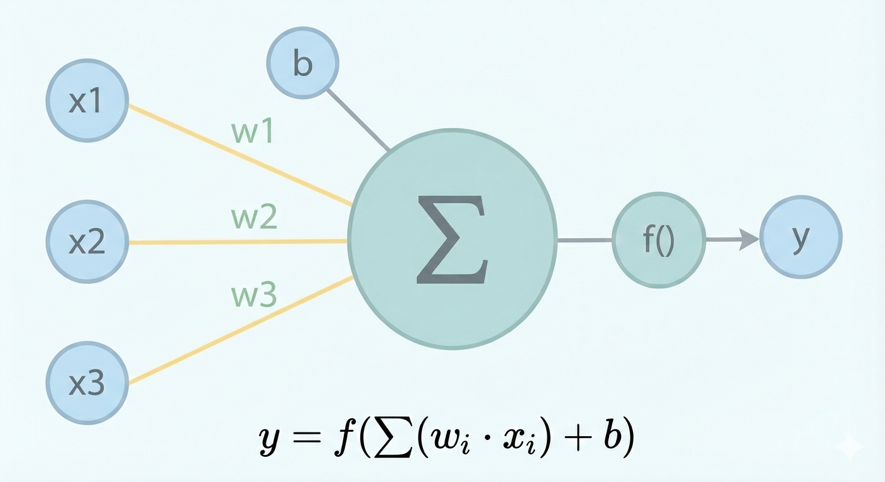
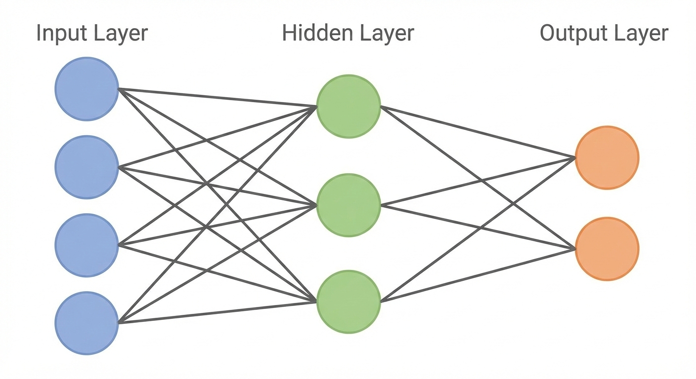
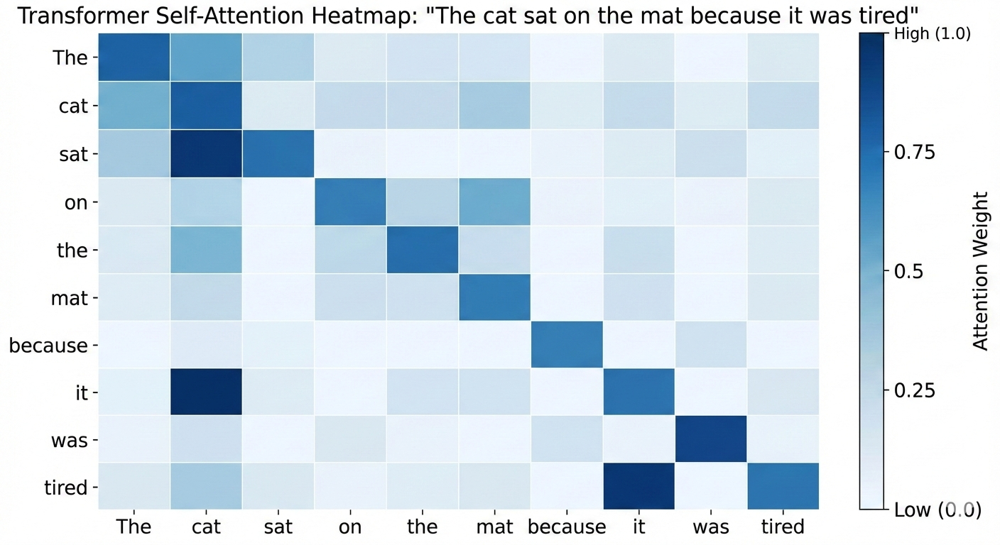

Introduction to Large Language Models
2026-01-15
Today’s goals
- Understand what a neural network is (high level)
- Learn how transformers work (the architecture behind LLMs)
- See how LLMs generate text
- Preview A1 — your first Python assignment
What is an LLM?
A Large Language Model is a neural network trained on massive amounts of text to predict the next word (token).
- “Large” = billions of parameters (learned weights)
- “Language” = trained on text data
- “Model” = a mathematical function that maps input → output
Examples: GPT-5, Claude, Gemini
Neural networks: the basic idea
A neural network is a function that:
- Takes input (e.g., words, pixels, numbers)
- Passes it through layers of simple computations
- Produces output (e.g., next word prediction)
Each layer transforms the data, learning increasingly abstract patterns.
A single neuron
Key idea: Each neuron computes a weighted sum of inputs, then applies an activation function.
Layers of neurons

- Each connection has a weight (learned during training)
- The network learns by adjusting weights to minimize prediction errors
How neural networks learn
- Forward pass: Input flows through the network → prediction
- Loss calculation: Compare prediction to correct answer
- Backward pass: Calculate how each weight contributed to the error
- Update weights: Adjust weights to reduce error
- Repeat millions of times on training data
This process is called gradient descent + backpropagation.
Tokens, not words
LLMs don’t see words—they see tokens (subword pieces):
| “Hello” |
[“Hello”] |
[13225] |
| “unhappiness” |
[“un”, “h”, “appiness”] |
[373, 71, 117779] |
| “ChatGPT” |
[“Chat”, “GPT”] |
[14065, 162016] |
Why? Handles rare words, typos, new words efficiently.
Each token is represented by a unique token ID (positive integer)
Typical vocab: 100,000+ tokens
Embeddings: tokens as vectors
Each token maps to a vector (list of numbers):
"cat" → [0.2, -0.5, 0.8, 0.1, ...]
"dog" → [0.3, -0.4, 0.7, 0.2, ...] (similar to "cat")
"run" → [-0.1, 0.9, -0.3, 0.6, ...] (different direction)
- Embeddings are vectors in \(\mathbb{R}^d\) (\(d\) typically in the thousands)
- Similar words have similar vectors
- Embeddings are learned during training
- Sequence of \(L\) input tokens → \(L\) vectors → \(L\times d\) input matrix
Positional encoding
Transformers process tokens in parallel—but token order matters!
“The cat chased the dog” ≠ “The dog chased the cat”
Solution: Inject position info into each token representation.
- Each position gets its own positional encoding (e.g., a vector for position 1, 2, 3, …)
- Often added to the token embedding
(some modern LLMs encode position inside the attention computation instead)
- This gives the model the information it needs to learn how order affects meaning
Attention visualized
Each token’s representation is updated by combining information from other tokens via learned weights.
How LLMs generate text
- Input: “The weather today is”
- Model predicts probability distribution over all tokens
- Sample next token: “sunny” (p=0.3), “cold” (p=0.2), “nice” (p=0.15)…
- Append chosen token: “The weather today is sunny”
- Repeat until done
This is autoregressive generation—each token depends on all previous tokens.
Randomness
- At inference the transformer’s forward pass is deterministic
- After probabilities have been computed, the next token is chosen using a random draw according to the probabilities
Temperature and sampling
Temperature flattens (\(T>1\)) or sharpens (\(T<1\)) the probability distribution
- Low (0.0–0.3): More deterministic, picks highest probability
- Medium (0.5–0.7): Balanced creativity and coherence
- High (0.8–1.0+): More random, creative, sometimes nonsensical
Temperature 0.1: "The cat sat on the mat."
Temperature 0.7: "The cat lounged on the soft carpet."
Temperature 1.2: "The cat philosophized atop the cosmic rug."
Key takeaways
- Neural networks learn patterns by adjusting weights
- Transformers use self-attention to understand context
- LLMs predict the next token based on all previous tokens
- Generation is probabilistic—same prompt can give different outputs
- Temperature controls creativity vs. consistency
A1 — Mock LLM Chat
Your first Python assignment builds a chat application structure:
- Set up Python environment (
.venv, dependencies)
- Use LangGraph to structure conversation flow
- Build a simple command-line interface (CLI)
- Use a mock model (no API calls yet)
Why a mock model?
- Focus on structure and workflow first
- No API keys or costs to worry about
- Predictable behavior for testing
- A2 will connect to a real LLM via API
This pattern (mock → real) is common in software development!
A1 setup overview
Follow GitHub Classroom Workflow Instructions
- Accept A1 from GitHub Classroom
- Clone the repo
- Create virtual environment
- Activate it and install dependencies
- Follow the README to complete the assignment
AI Dev Log
- Starting with A1 you will complete an AI Dev Log for each build assignment
- Look for it in the
docs folder in the repo
- Some entries probably won’t be relevant for A1–write: “none” or “NA”
## Entry N - [Brief title]
**Date:** YYYY-MM-DD
**Goal:** [What you were trying to accomplish]
**Tool used:** [e.g., ChatGPT, Claude, Copilot, none]
**Prompt/Question:** [What you asked the AI, or describe the problem]
**AI Response:** [Key suggestions or guidance received]
**Changes Made:** [Actual code/files modified]
**Testing:** [How you verified it works]
**Result:** [Did it work? Any issues?]